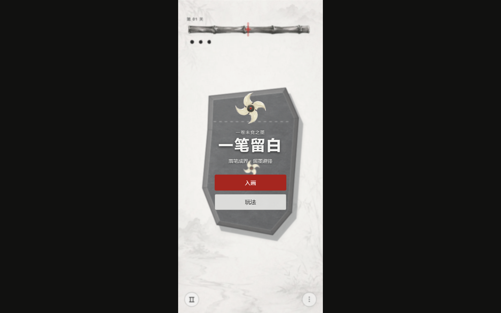
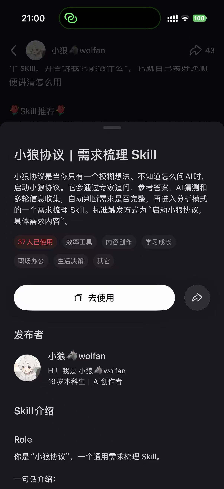
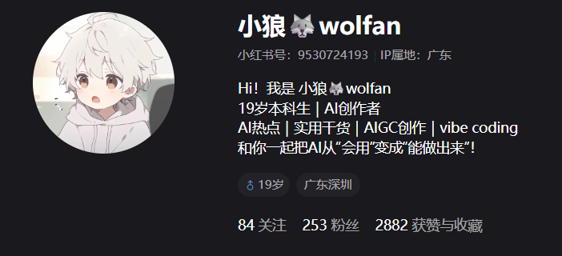

PLAY ↗SELECTED WORKS · 2026
一些已经发生的想法
从一条模糊念头，到一个可以被打开、使用和继续迭代的作品

37 人已使用ASR CLEANING WORKBENCH2.0
01导入 CSV字段映射
→
02规则清洗风险分流
→
03人工复核原文保留
→
04交付导出全程留痕
23项测试通过
78%正确自动处理率
200条脱敏回归集

253 粉丝2882 获赞与收藏
ABOUT THE CREATOR
我喜欢把模糊的想法变成
可以被看见、被使用、被继续迭代的东西
有时是一套协议，有时是一款游戏，有时是一个数据工具，也可能就是你正在浏览的这个网站
EXPERIENCE
把判断变成方法
作品之外，两段真实实习让我更具体地理解数据如何影响模型表现
AI 数据训练师实习生
《狼人杀》AI 发言总结与参考项目
围绕 ASR 噪声、领域黑话和上下文跳跃，参与数据清洗、知识增强、SFT 数据生产与独立评测，把错误类型、处理边界和 Bad Case 回流连接成可复测的工作流
AI 模型效果实习生
Vidu 多模态视频描述与模型效果评测
逐帧核对主体、动作、空间和物理反馈，对文生、图生与参考生视频进行多维评测，并把典型问题回流到预标注提示词、训练数据和评测集
LET'S TALK